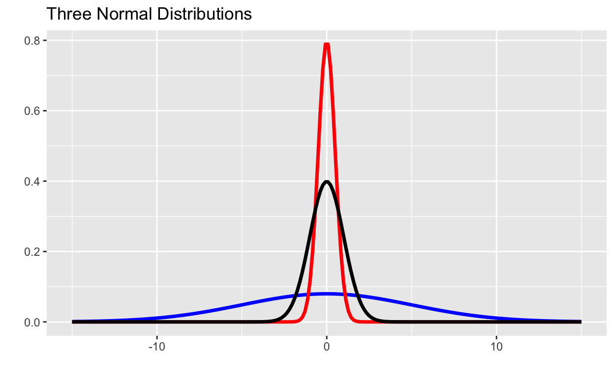
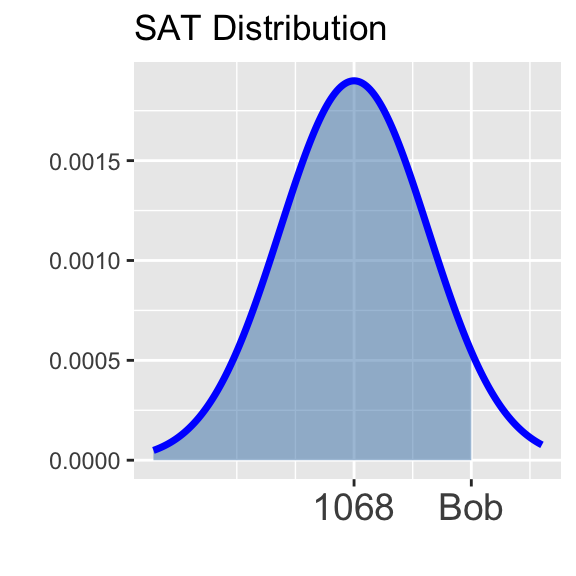
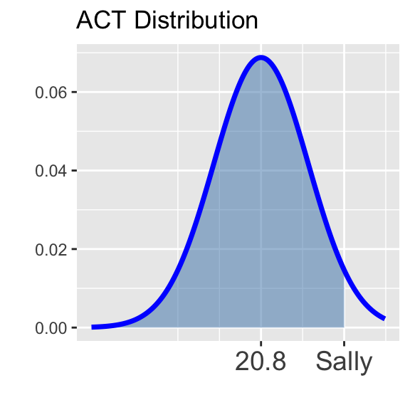

Topic 6: The Normal Distribution
Throughout this workbook we’ll investigate the probability distribution that is most central to our study of statistics: the normal distribution. If we are confident that our data are nearly normal, that opens the door to many powerful statistical methods. This workbook gives you practice with normally distributed data.
Objectives
Workbook Objectives: After completing this workbook you should be able to:
- Compute probabilities of events well-modeled by a normal distribution.
- Given a variable \(X\) which follows an assumed normal distribution, compute and interpret various percentile thresholds for \(X\).
- Identify scenarios to which the normal or binomial distributions can be applied, and use them to answer various probability-related questions.
The Normal Distribution
Definition: If a random variable \(X\) is normally distributed with mean \(\mu\) and standard deviation \(\sigma\), we often write \(X\sim N\left(\mu, \sigma\right)\). Three different normal distributions appear below.
- In blue is a normal distribution with \(\mu = 0\) and \(\sigma = 5\)
- In red is a normal distribution with \(\mu = 0\) and \(\sigma = 0.5\)
- In black is a normal distribution with \(\mu = 0\) and \(\sigma = 1\) (the so-called Standard Normal Distribution)

Notice that all three distributions are bell-shaped and are centered at their mean (\(\mu = 0\)). The larger the standard deviation, the shorter and wider the curve, while the smaller the standard deviation, the taller and more narrow the curve.
Given that \(X\sim N\left(\mu, \sigma\right)\), we can compute probabilities associated with observed values of \(X\) by finding the corresponding area beneath the normal curve with mean \(\mu\) and standard deviation \(\sigma\).
Properties of the Normal Distribution: We have the following properties associated with the normal distribution. Consider \(X\sim N\left(\mu, \sigma\right)\).
- The area beneath the entire distribution is 1 (since this is equivalent to the probability that \(X\) takes on any of its possible values).
- \(\displaystyle{\mathbb{P}\left[X\leq \mu\right] = \mathbb{P}\left[X\geq \mu\right] = 0.5}\) (the area underneath a full half of the distribution is 0.5)
- The distribution is symmetric. In symbols, \(\mathbb{P}\left[X\leq \mu - k\right] = \mathbb{P}\left[X \geq \mu + k\right]\) for any \(k\).
- \(\displaystyle{\mathbb{P}\left[X = k\right] = 0}\) (the probability that \(X\) takes on any prescribed value exactly is \(0\))
Sometimes it is useful to be able to estimate probabilities or to estimate the proportion of a population that falls into a range as long as the population is nearly normal. A convenient rule of thumb is the Empirical Rule.
The Empirical Rule: If \(X\sim N\left(\mu, \sigma\right)\), then
- \(\mathbb{P}\left[\mu - \sigma \leq X\leq \mu + \sigma\right] \approx 0.67\) – that is, about 67% of observations lie within one standard deviation of the mean.
- \(\mathbb{P}\left[\mu - 2\sigma \leq X\leq \mu + 2\sigma\right] \approx 0.95\) – that is, about 95% of observations lie within two standard deviations of the mean.
- \(\mathbb{P}\left[\mu - 3\sigma \leq X\leq \mu + 3\sigma\right] \approx 0.997\) – that is, about 99.7% of observations lie within three standard deviations of the mean.
For each of the following, assume that \(X\sim N\left(\mu = 85, \sigma = 5\right)\)
Standardization and \(z\)-scores
Scenario: Two students, Bob and Sally, are trying to compare how well they did on a college entrance exam. The difficulty comes in that Bob took the SAT which is known to follow an approximate normal distribution with a mean score of 1068 and a standard deviation of 210 while Sally took the ACT which also follows an approximately normal distribution but with a mean score of 20.8 and a standard deviation of 5.8. If Bob scored a 1400 on the SAT and Sally scored a 31 on the ACT, who scored relatively higher?
How do we answer this question? We’ll see two methods.
Method 1: We can standardize the test scores so that they have comparable units.
- Definition: If an observation \(x\) comes from a nearly normal population with mean \(\mu\) and standard deviation \(\sigma\) then we compute \(z\)-score associated with \(x\) as follows:
\[\displaystyle{z = \frac{x - \mu}{\sigma}}\]
An observation’s \(z\)-score is simply the number of standard deviations it falls above or below the mean.
Use the code block below to compute Bob and Sally’s \(z\)-scores and answer the questions that follow.
#Use the z-score formula, above.#Fill in the blanks
(___ - ___)/___#For Bob, we should have
(1400 - ___)/___
#Since Bob took the SAT, we need to use the
#mean and standard deviation from that test
#to find their z-score. Fill those in.#Bob's z-score is computed as follows:
(1400 - 1068)/210#Do the same for Sally, but use her ACT score,
#along with the mean and standard deviation for
#the ACT.
(___ - ___)/___A recap on \(z\)-scores: We can use \(z\)-scores as a common unit for comparing observations from completely different populations (such as SAT scores and ACT scores). Here’s a recap of the most important information so far:
If an observation \(x\) comes from a nearly normal population with mean \(\mu\) and standard deviation \(\sigma\), we can compute it’s \(z\)-score using the formula: \(\displaystyle{z = \frac{x - \mu}{\sigma}}\).
A \(z\)-score measures the number of standard deviations which an observation falls above or below the mean.
- A positive \(z\)-score means that an observation was above the mean.
- A negative \(z\)-score means that an observation was below the mean.
- The larger a \(z\)-score is in absolute value, the further the corresponding observation falls from the mean. That is, the larger the magnitude of a \(z\)-score, the further into the tail of the distribution the corresponding observation falls.
Method 2: We can compute the percentile corresponding to Bob’s SAT score and the percentile corresponding to Sally’s ACT score.
- Definition: Given an observation \(x\) from a population – the percentile corresponding to \(x\) is the proportion of the population which falls below \(x\).
Bob’s percentile corresponds to the shaded area in the distribution below.

Sally’s percentile corresponds to the shaded area in the distribution below.

There are many ways to compute percentiles. Before the widespread availability of statistical software, people converted observed values to \(z\)-scores and then looked up the percentile in a table. Luckily R provides nice functionality for computing percentiles.
Computing Percentiles in R: If \(X\sim N\left(\mu, \sigma\right)\), then \[\mathbb{P}\left[X\leq q\right] \approx \tt{pnorm(q, mean = \mu, sd = \sigma)}\]
The block below is preset to compute the Bob’s percentile. Execute the code cell and then adapt the code to find Sally’s percentile. Use your results to answer the questions below.
pnorm(1400, 1068, 210)#Just run this code to compute Bob's percentile
pnorm(1400, 1068, 210)#The arguments for pnorm() are, in order:
####boundary value,
####distribution mean
####distribution standard deviation
pnorm(1400, 1068, 210)#Fill in the blanks with the following to find
#Sally's percentile:
####Sally's ACT score (the boundary value)
####the mean ACT score
####the standard deviation in ACT scores
pnorm(___, ___, ___)We’ll make good use of this second method for a while, but don’t
forget about standardization and \(z\)-scores. We’ll need that strategy quite
often later in our course! For now, let’s move on to practicing with
finding probabilities from a normal distribution using R’s
pnorm() function.
Submit
Continuing On…
Once you close this notebook, launch the
Topic 6b: The Normal Distribution notebook to continue
working through more of the content from the full Topic 6
notebook.
Partial Summary: In this notebook you’ve encountered the following points.
A normal distribution is approximately bell-shaped and can be described by its mean \(\mu\) and standard deviation \(\sigma\).
As a shorthand, we often write \(N\left(\mu, \sigma\right)\) to mean the normal distribution with mean \(\mu\) and standard deviation \(\sigma\).
The Empirical Rule is a “rule of thumb” that states that, if data is normally distributed we expect:
- Approximately 67% of observations fall within one standard deviation of the mean.
- Approximately 95% of observations fall within two standard deviations of the mean.
- Approximately 99.7% of observations fall within three standard deviations of the mean.
A \(z\)-score measures the number of standard deviations an observed value falls away from the mean.
- We can calculate the \(z\)-score for an observed value \(x\) using the formula \(\displaystyle{z = \frac{x - \mu}{\sigma}}\)
We can interpret areas underneath the normal distribution to be probabilities.
If \(X\sim N\left(\mu, \sigma\right)\), then \(\mathbb{P}\left[X\leq k\right] = \tt{pnorm(k, mean = \mu, sd = \sigma)}\)
- Remember that \(\tt{pnorm()}\) always returns the area to the left of the boundary value \(k\).
If \(X\sim N\left(\mu, \sigma\right)\), then the \(p^{th}\) percentile of \(X\) (the cutoff for which the proportion of the population falling below is \(p\)), is given by \(\tt{qnorm(p, mean = \mu, sd = \sigma)}\)
- Remember that \(p\) must be the area to the left of the desired cutoff value.